Watercolor → ink → pencil → gouache · Sep 30 to Oct 3, 2026
Claude learns to paint
I asked Claude for a watercolor simulator. Four days later it had added ink, pencil and gouache, and taught itself to use them: sumi-e herons, pencil herons, then one robin painted eight times in gouache, an opaque water-based paint. This is every change that mattered, what prompted it, and the evidence it was based on.
The setup stayed the same the whole way through. Claude writes each medium as a simulation that runs in a web page, then paints by sending it brush strokes from code, toward a reference image that OpenAI's image model makes for it. It works in batches and saves a checkpoint after each one. A judge scores every checkpoint against the reference, and anything that made things worse gets rolled back. A rolled-back branch sticks around as a lookahead Claude can return to. The number after each painting is its score, how far it is from the reference: lower is closer, and scores only compare within one medium.
What changed, a lot, was everything inside that loop. Below is each step in order, with times in my time zone (Eastern).
The whole run, in pictures
Every milestone in order. Tap one to jump to the step that made it. Any image on the page opens full size.
This started as a toy. I asked for a fully realistic watercolor sim and then kept pointing at whatever still looked fake. Most fixes came from Claude stepping frames in code and inspecting screenshots, without waiting for me to notice.
1Sep 308:47 am
A watercolor sim from scratch
Why
I asked for a fully realistic watercolor simulation in WebGL.
Tried
Before rendering anything, Claude fitted Kubelka–Munk coefficients (the standard model of how pigment absorbs and scatters light) for 8 pigments in a script and checked their tint ramps and mixes. Then water as shallow-water flow on the GPU, with the paper's own capillary layer underneath. Pigment gets carried, settles, deposits and lifts. Blooms form with dark ragged rims, and a surface-tension term stops single-cell "fingers".
Result
Granulation started as pixel noise. It became pigment settling into the paper's felt bumps.
Diamond-shaped edges came from water momentum running along the grid. Fading inertia in thin films fixed it, since thin films are dominated by viscosity.
Kept · published as the interactive sim
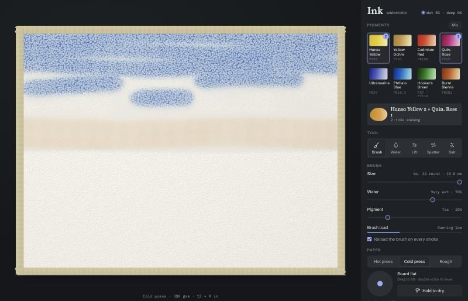
Before · granulation as per-pixel noise in the sky
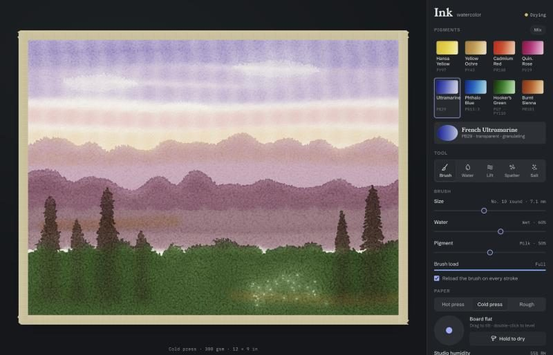
After · the v1 dusk demo, pigment settling into the paper's tooth
2Sep 3010:07 am
The brush gets hairs
Why
I asked Claude to hunt for whatever still looked unrealistic, starting with a model of individual brush fibers.
Tried
A bending spine clamped in a ferrule, holding 24 to 98 tufts on springs. Each tuft carries its own water and pigment and refills from a reservoir in the belly. A wet brush holds a point; as it dries it clumps into streaks. Tufts pick paint back up, so blue dragged through wet yellow comes out green. Round, flat, mop and rigger brushes.
Result
Overlapping tufts drained water about 20× too fast until contact was normalized to the real footprint.
Blooms wouldn't spread, because pressure alone can't move a thin film. Fiber-guided wicking fixed that. It then stamped a crosshatch, so the fiber directions were randomized.
Kept
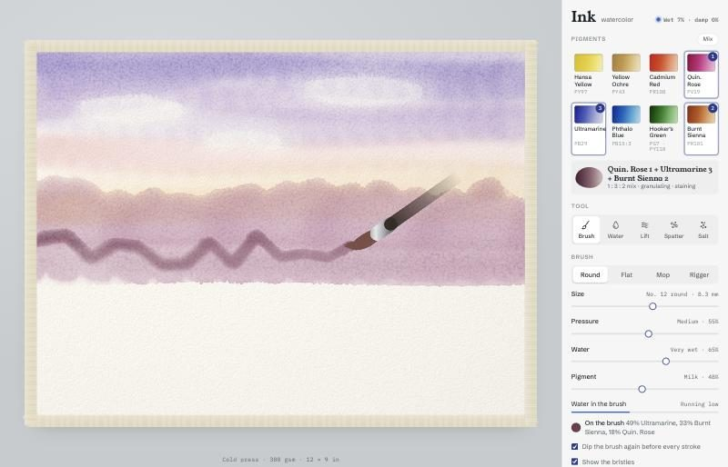
The fiber brush · with a readout of what's on the brush
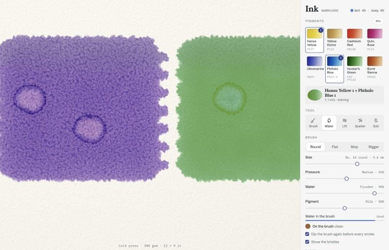
Blooms · dark ragged rims, pale centers
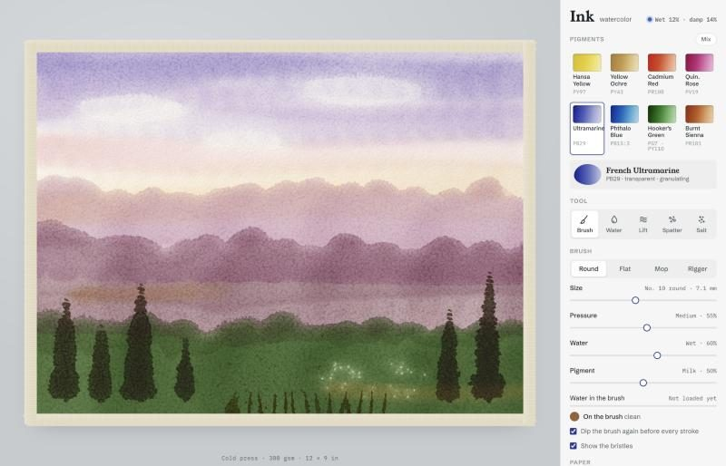
Pines, before · the brush laid blobs
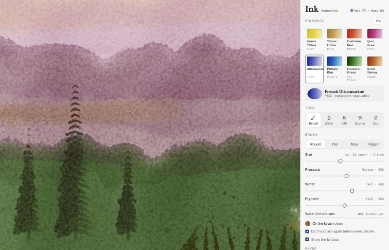
Pines, after · repainted in branch tiers once the brush splayed properly
3Sep 3010:56 am
Measuring striped brush strokes before fixing them
Why
I could see a repeating pattern in the strokes and asked whether they needed some kind of interpolation.
Tried
Claude ran a spectral test on a constant-speed stroke before changing anything and found five separate causes. The demo script itself spaced its passes exactly 0.034 of the sheet apart. The brush laid one lump of paint per frame. Each tuft read paper it had wetted a frame earlier. Mouse samples were joined by straight lines. And the fiber noise had an 11.75-cell lattice. Claude fixed all five.
Result
The worst offender was Claude's own demo: a ~70-cell period about 8× above the noise floor.
A 120 Hz screen used to lay 1.8× more pigment than 60 Hz. Now they match.
I asked whether it made the sim more realistic. Claude said "Mostly no": these were artifact fixes. It also walked its own "5% ripple" figure back to about 2× noise.
Kept
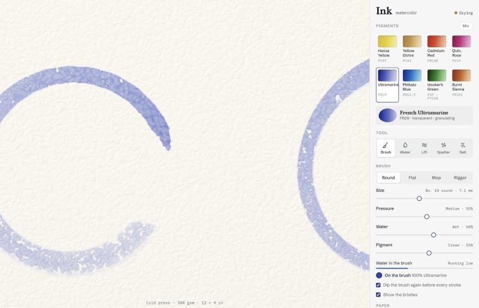
Fast circles · straight segments between samples (left) vs splines plus time slices (right)Part two · Sumi-e ink
Claude starts painting, and finds out it's the bottleneck
Sep 30 · 11:15 am to 7:28 pm
Ink got the agent built: a reference image, checkpoints, a judge, rollbacks. The first painting took 36 checkpoints and threw half of them away. Most of the afternoon went into learning that the problem was Claude's model of its own brush, not the simulator.
4Sep 3011:15 am
Sumi-e: rice paper, a fude and a halo
Why
I asked for a sumi-e ink demo, then for Claude to fix the limitations it had listed.
Tried
An ink palette (pine soot, oil soot, indigo, ochre, gamboge, cinnabar), three xuan rice papers and a goat-hair fude (an East Asian ink brush) that can be loaded in three tones. Raw xuan didn't bleed any more than watercolor paper did, so Claude added sideways wicking and filtration. Then it added a separate layer of fine carbon that travels further than the rest, which makes the halo (nijimi). It also carved a seal and brushed a signature.
Result
Halo: a 6.8 mm core with a ~5.6 mm pale fringe at 10 to 14% of its darkness on raw xuan, against 0.9 mm on sized xuan (coated so ink spreads less).
Still missing: a dark tide-line at the halo's edge. An edge-evaporation attempt was reverted.
Kept · tide-line dropped
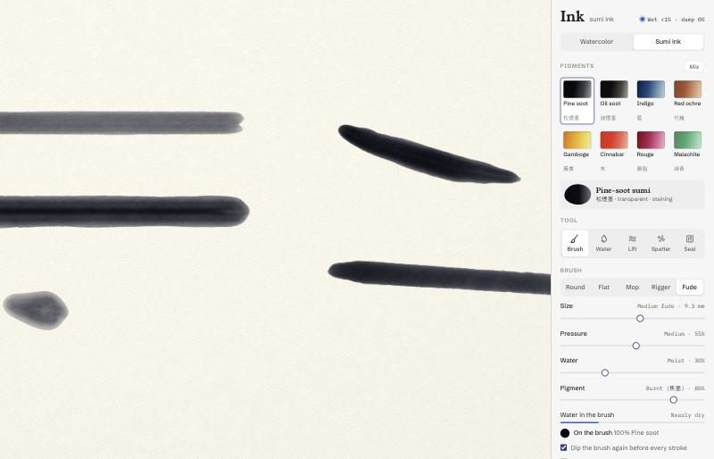
Raw xuan, before · strokes stop at their edges
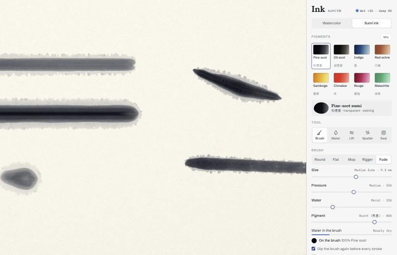
After the fines layer · pale fibrous halos (nijimi)
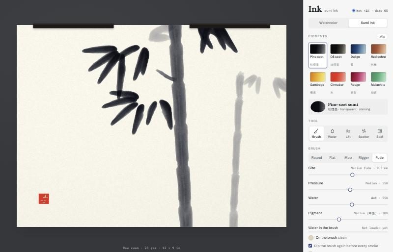
Bamboo v4 · no halo, bar seal
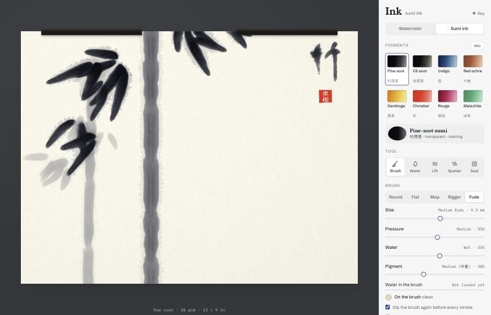
Bamboo v5 · nijimi halos, brushed 竹, carved 墨趣 seal
5Sep 3012:02 pm
A studio Claude can work in
Why
I asked Claude to build itself a way to paint: generate a reference with gpt-image-2.5, save a checkpoint every few actions, judge each one, roll back what doesn't work, and count the rolled-back branch as a lookahead.
Tried
Claude drives the sim the way a painter works a sheet. It can test a stroke on scrap paper, dry a passage forward to see how it will settle, and calibrate how each pigment and load actually looks once dry. Every checkpoint can be returned to exactly, so trying something and taking it back costs nothing.
Result
The sim runs about 10× real time. 15 checkpoints in 27 s.
The reference is the picture Claude is trying to paint. A blank sheet scores 12.25 against it.
Kept
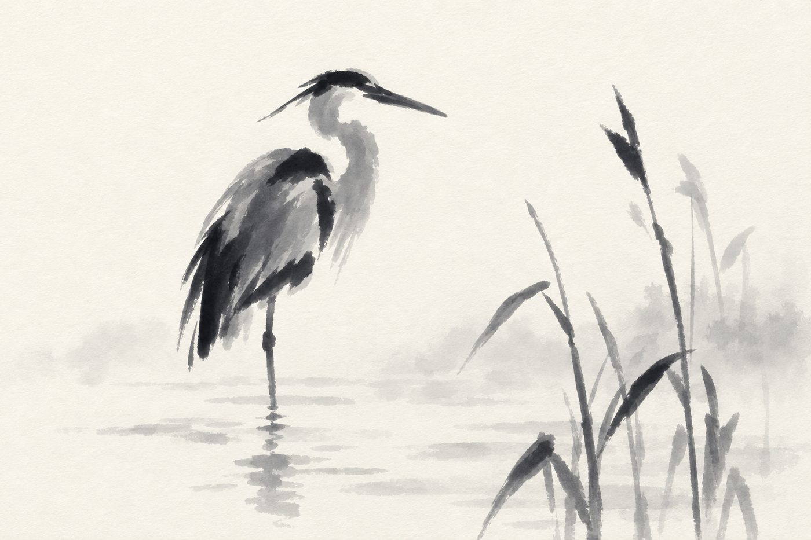
The reference · gpt-image-2.5, told to paint in the sim's own medium
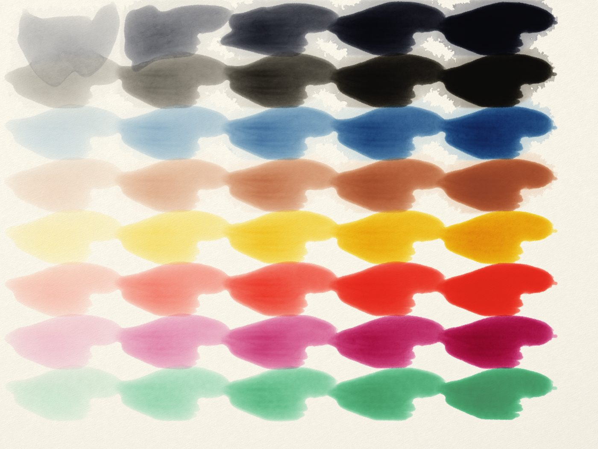
Calibration · pigment × load, dried and measured
6Sep 3012:47 pm
First painting: 36 checkpoints, 18 rolled back
Why
I wanted an end-to-end video of it painting.
Tried
A scrap test showed raw xuan haloed every stroke, so the run used half-sized xuan. Calibration showed pine soot is steep: a load of 0.1 already gives L78 (lightness, 0 black to 100 white), so the mist needed loads around 0.03 to 0.06.
Result
Score 12.25 → 9.29, with 95 actions kept.
Rolled back: the mist twice (too dark), blobby reed heads, a neck twice as thick as it should be, a carrot-shaped leg twice, and a cap blob from the fude splaying 3× at pressure 0.8.
Darks painted into the wet body bled everywhere (the score got 1.87 worse). The fix was to dry the sheet first.
Kept
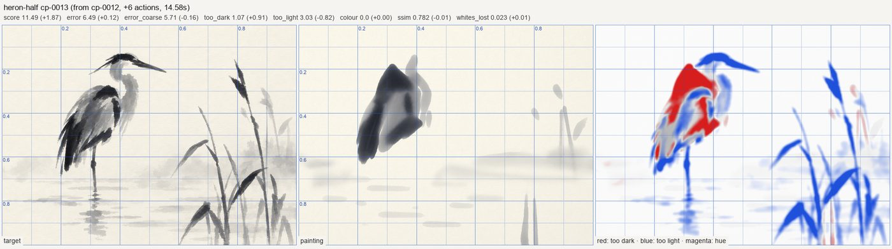
Checkpoint 13 · target · painting · error map. Darks bled into a wet body, so it was rolled back.
7Sep 302:02 pm
Mostly Claude's fault, not the simulator's
Why
I asked whether the problems were limits of the simulator or of what Claude did with it.
Answer
"Mostly me." Most rollbacks came from misjudging how the brush turns a path into a mark. Claude found two real limits in the sim: pale ink has a floor, and edge softness only changes by switching paper. It also named its own process gaps: no model of its strokes up front, coordinates read by eye, batches of 6 actions, a score blind to texture, and only 3 lookaheads.
8Sep 302:07 pm
A stroke library, and a judge that looks only where Claude painted
Why
I gave it a list: a library of strokes to call on and adjust while painting, rollback to any checkpoint, a better score, and counting the pre-rollback branch as the lookahead.
Tried
Claude turned the first run's keep and reject calls into a test set. The old score was global, so a small batch's effect drowned in the whole sheet. The new judge only measures where a batch painted: error within a tolerance, over-darkening, precision and texture. It blames individual actions and returns BETTER, FLAWED or WORSE. Rollback now goes to any checkpoint, or to any single action inside one. The library turns "a 4 mm mark at L60, here" into brush moves using calibration sheets, and checks itself in a closed loop.
Result
The new judge flagged all 12 batches Claude had rejected in the first run (some rejections cost two checkpoints).
Library accuracy, median miss: length 0.5 → 0.16 mm, width 7% → 6%, lightness 3.8 → 0.5.
Hand-picked leaf coordinates were 5 to 10 mm off, so a tracing tool now reads strokes from the reference.
Run 2 scored 8.98 against 9.29, but only by leaving out the leaves, cattail heads and crest.
Kept
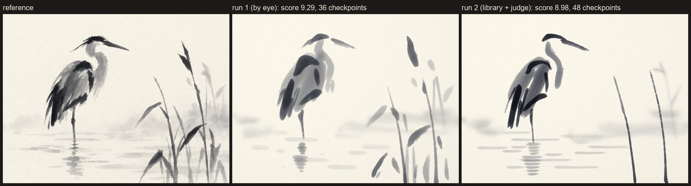
Reference · run 1 (by eye, 9.29) · run 2 (library and judge, 8.98)
9Sep 303:03 pm
Adding texture: brush hairs that leave streaks
Why
I wanted the brush in the animation, and said we weren't getting enough texture.
Tried
Claude measured edge raggedness: 1.44 to 2.64 in the reference, 1.17 in Claude's painting. It found four causes. On the physics side, a dry brush gave paper speckle instead of hair streaks. The default water (0.38) always painted solid. Strokes laid into a wet wash merged. Resolution mattered least. The fixes were hair gaps anchored to the stroke, outer tufts that refill more slowly, and a texture setting (solid, natural, dry). A new "press" action gives an upright rosette or a leaning teardrop.
Result
The heron's back went to 1.53 raggedness against the reference's 1.44. The body underlayer is still 1.23 against 2.64.
The repaint scored 9.37, slightly worse than run 2's 8.98. The score can't see texture, so it only counted the drier strokes as a small loss.
Kept
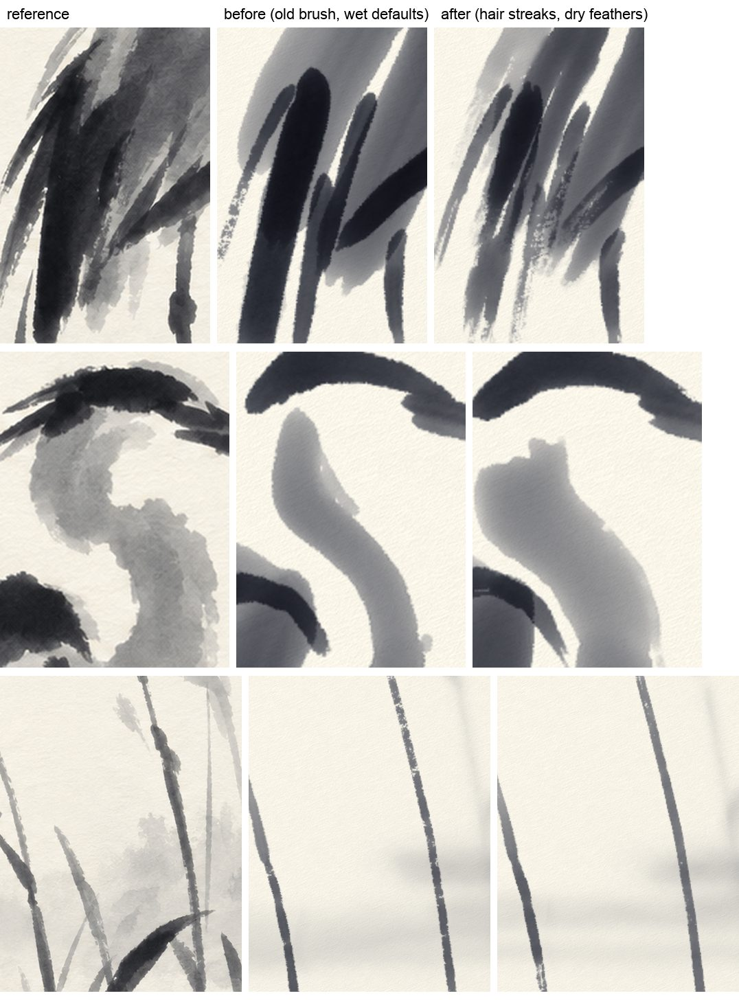
Texture · reference · old brush · hair-streak brush
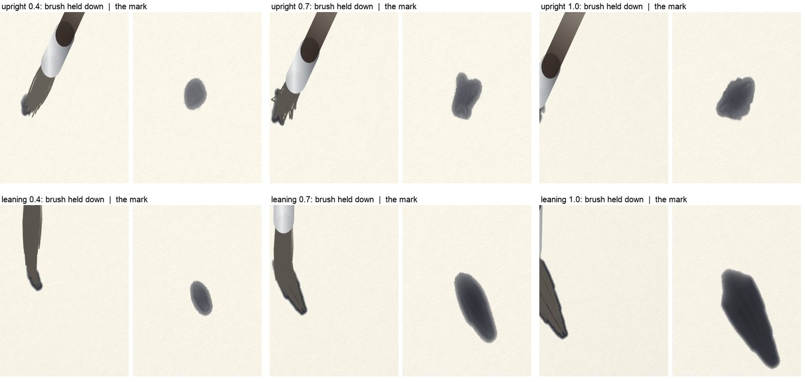
Press · upright rosettes and leaning teardrops at 0.4, 0.7 and 1.0
Ink heron, run 3, painting itself · time-lapse of the kept strokes, with the fiber brush drawn in
10Sep 303:32 pm
Fast enough to search
Why
I asked how fast the sim could run, and whether Claude could branch from any earlier state, or recombine moves from different states and replay them.
Tried
Claude benchmarked everything first. Then it built a search that paints and scores dozens of variants of a move inside the page, keeping the best. Order matters in paint, so combined moves have to be replayed rather than merged.
Result
One stroke ~25 ms. A full replay of the heron from blank 3.4 s. Checkpoint save 3 ms, restore 1 ms.
Scoring a candidate in the page: 131 ms dried, 18 ms wet.
48 painted variants in 7.8 s.
On one leaf, the judge rated search's best stroke 63 against 20 for Claude's pick (on this per-stroke rating, higher is better). Claude had written the leaf backwards: "the score was right; I was wrong".
Kept
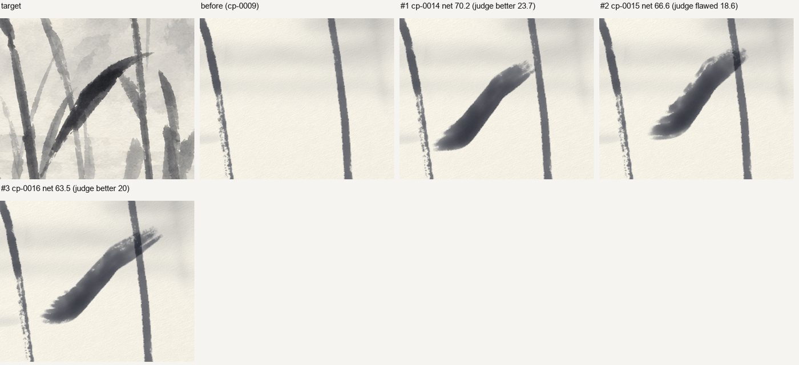
Search · the top 3 of 48 painted variants for one leaf, with scores
11Sep 304:01 pm
A codebook: 11,132 brush marks, each painted and measured
Why
I suggested a codebook of strokes might work, since Claude could just experiment with lots of them, and asked it to fix the way the brush lands.
Tried
Brush contact first. The tip hairs had stopped 0.8 mm short, so contact snapped on at 4 to 7 mm wide. Now the point touches first and splay grows with contact time. Then the codebook: 12,000 gestures spread over 13 parameters. Each one is painted, isolated and measured, so a mark can be looked up by shape, and blended from its neighbors when there's no exact match.
Result
First touch 3.4 → 1.8 mm wide.
11,132 marks in 11 minutes on 696 sheets.
Rotating a mark changed it by 0.9 to 3 mm, against 0.4 to 0.5 mm for just moving it, because the brush lean carried over from the last stroke. The fix was reverted, so the codebook is only approximate under rotation.
Best automatic reed rated 60.5, against 63 for the best hand-found blade.
Kept
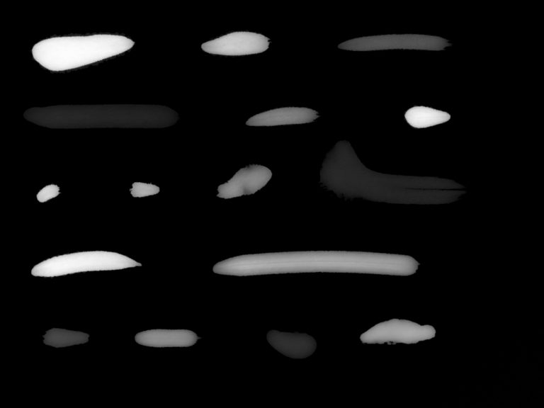
One of 696 codebook sheets · each mark painted, isolated and measured
12Sep 305:33 pm
The results weren't amazing because Claude's plan covered 22% of the ink
Why
I asked why the results weren't amazing. That was the whole message.
Tried
Claude measured every stage and answered "mostly because of how I set it up, not the brush". Its traced strokes covered only 22% of the visible ink in the reed passage. Most marks the heron needed weren't in the codebook: the nearest entry was 1.5 to 3.6 times farther off than entries sit from each other. And the fit stopped at its first proposal. Painting accuracy was fine: marks landed within 0.3 mm of prediction. The fixes were stroke extraction from a skeleton of what's still missing, growing the codebook toward the target, refining every choice, and painting by value level (L40, 55, 68, 80). Pale smudges scored well because the score only counted darkness, so an outline constraint and a structure term went in.
Result
Reed passage: missing ink 9.95 → 4.06, then 3.76 with the outline constraint.
Whole heron from blank: 129 of 157 marks kept out of 7,165 candidates, in 60 minutes. Missing ink by level 7.9 → 2.23. The codebook grew from ~11k to ~32k marks.
Score 5.65, the best of the four ink herons (the hand-placed runs scored 8.98 to 9.37).
Claude's verdict: it "isn't beautiful yet". The water is cloudy and the body blobby.
Kept
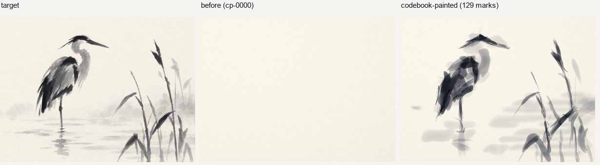
Target · blank · painted from the codebook (129 marks)
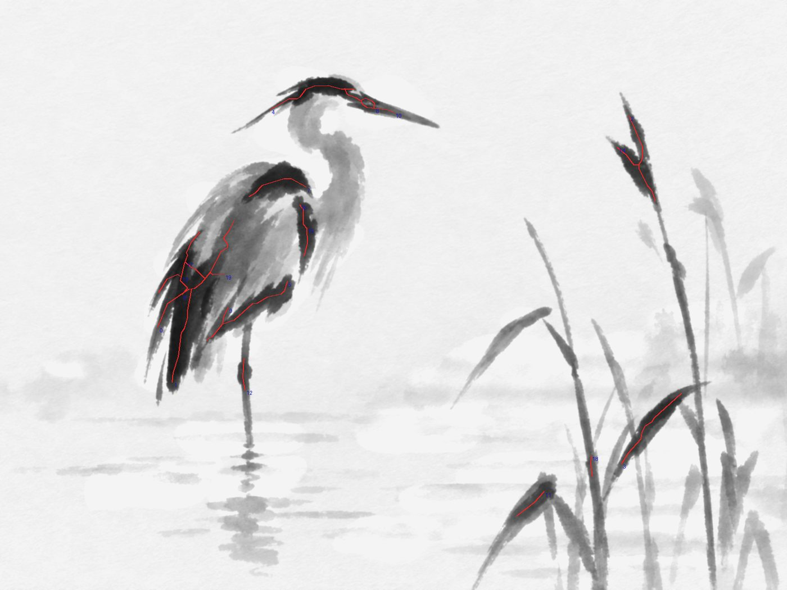
Strokes read from the reference · the darkest level (L40), before painting
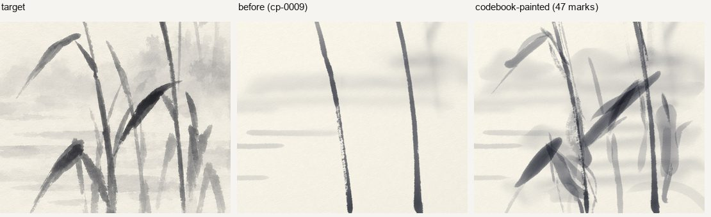
Reeds, before · 47 marks, pale smudges scoring well
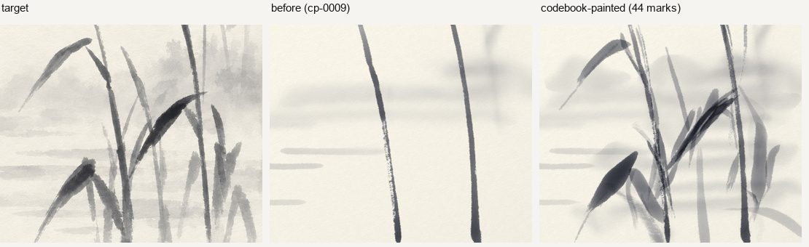
After the outline constraint · 44 marks
Run 1 · by eye · 9.29
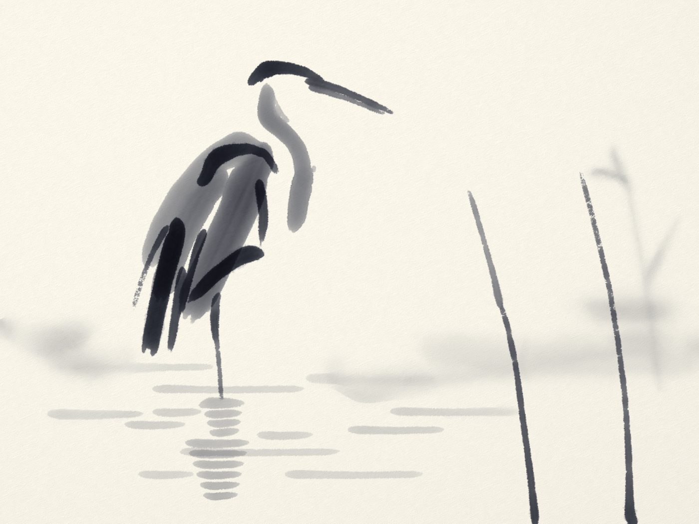
Run 2 · library + judge · 8.98
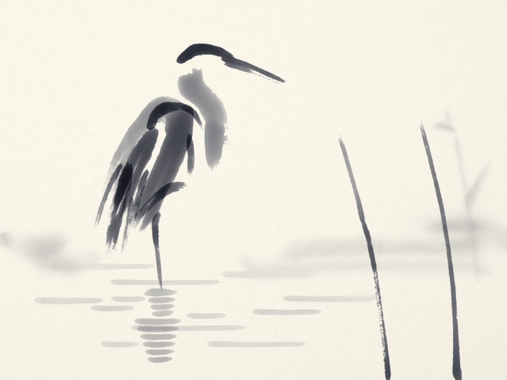
Run 3 · hair-streak brush · 9.37
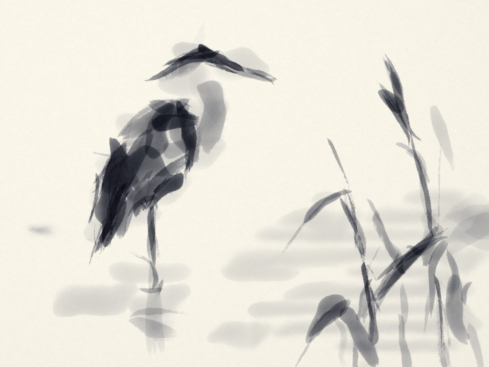
Run 4 · codebook · 5.65
Part three · Pencil
From plotted lines to a hand
Sep 30 · 7:47 pm to Oct 1 · 2:41 pm
Pencil is where Claude stopped drawing like a plotter. The short version, with the five herons and the video, is on the Claude learns to draw page. This is what happened between them.
13Sep 307:47 pm
Graphite, tooth and an eraser
Why
I asked for a pencil mode, using hand-written library strokes and no codebook.
Tried
Graphite goes straight into the pigment layer, with no water. The paper-tooth logic from watercolor granulation is flipped: a light touch catches only the peaks, and pressure fills the tooth. Grades 4H to 8B, a blending stump, and vinyl and kneaded erasers that lift graphite the way real ones do: HB comes up nearly clean, 8B leaves a ghost.
Result
The first test broke every line into dashes, because the watercolor paper's bumps were about 2 mm. Three drawing papers were added.
Calibration (621 strokes) showed one hatch layer bottoms out around L65 lightness even at 8B, so darker values now cross-hatch automatically.
Values landed where asked, except the darkest: L28 came out 38. A blank sheet scores 9.21.
Kept
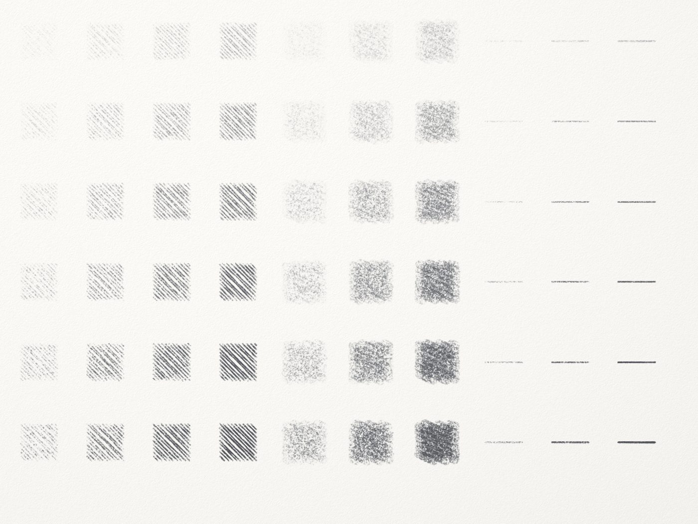
Calibration · grades × pressures, hatching and side shading
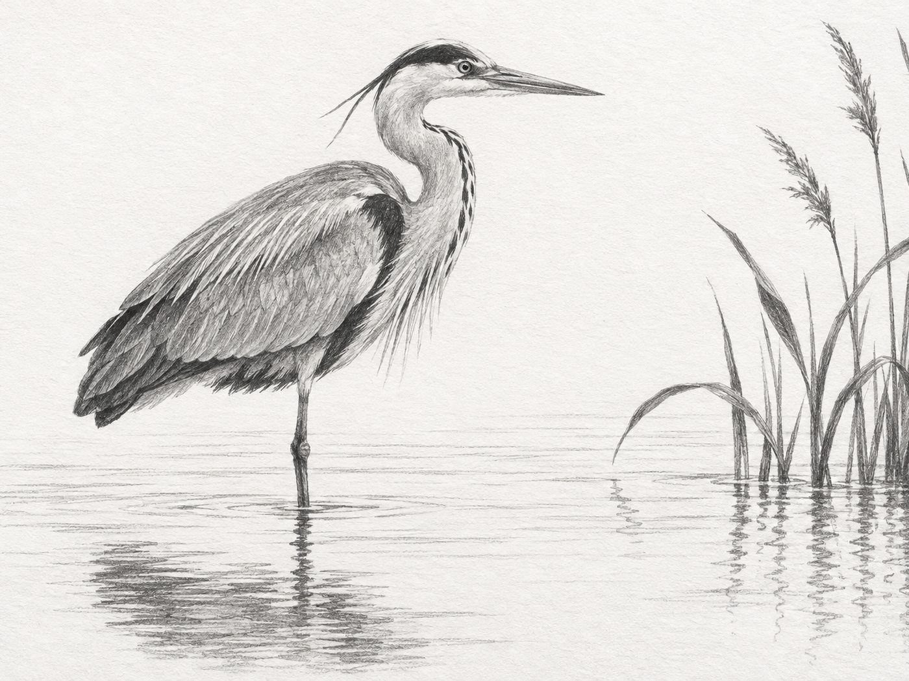
The reference · all five herons are scored against it
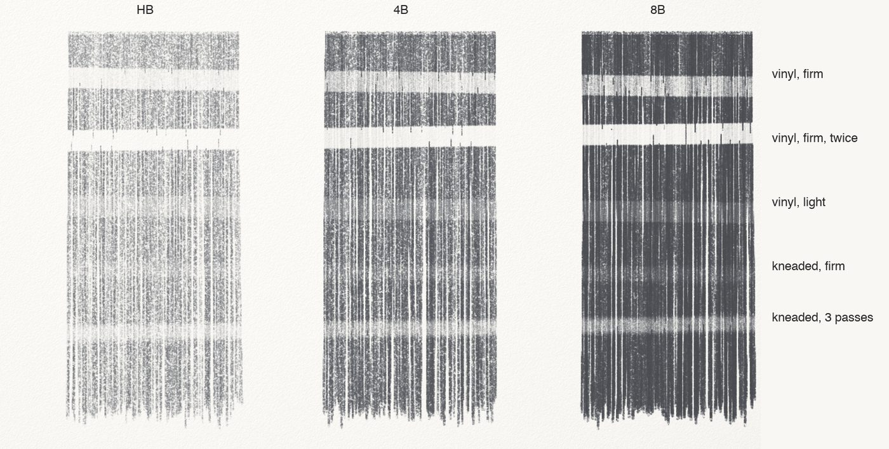
Eraser tests · vinyl and kneaded on HB, 4B, 8B
14Sep 308:05 pm
Heron 1: every line plotted like a machine (score 6.34)
Tried
Hand-written library strokes, plotted as exact curves.
Result
A wing of three crossing layers became one flat dark mass and was rolled back. Four tones along the feathers kept it (9.06 → 7.41).
Layers multiply, so darks overshot. Each layer now only adds the darkness still missing.
Claude kept the reeds against the judge's WORSE. Its strict precision punished lines 1 mm off that matched by eye.
Kept · looks plotted
Heron 1 · 6.34 · every line plotted as an exact curve
15Sep 308:46 pm
Heron 2: rough first, zoom in, and a hand (score 6.16)
Why
I asked it to rough in the outlines first and to be able to zoom in on a region. I also pointed out that the pencil moved a bit like a machine plotting a path, and suggested it set the pencil's acceleration instead of drawing each curve directly.
Tried
A model of a hand: minimum-jerk timing (the smooth speed-up and slow-down of a practiced reach), plus the two-thirds power law so tight curves go slower. Loose searching strokes rough in the drawing first. A zoom tool shows the reference, the drawing and a too-dark/too-light map for any box, with a grid and that region's own error.
Result
Average miss from the path: 0.27 mm for the careful hand, 0.69 mm for the rough one.
The machine look came from uniformity more than position. Lines now swell and thin, and hatching comes in bursts of 5 to 9 strokes with jittered angles and ragged ends.
Zoom showed the crest drawn on top of the crown. Redrawn: head error 10.34 → 10.06. 9 checkpoints, none rolled back.
Kept
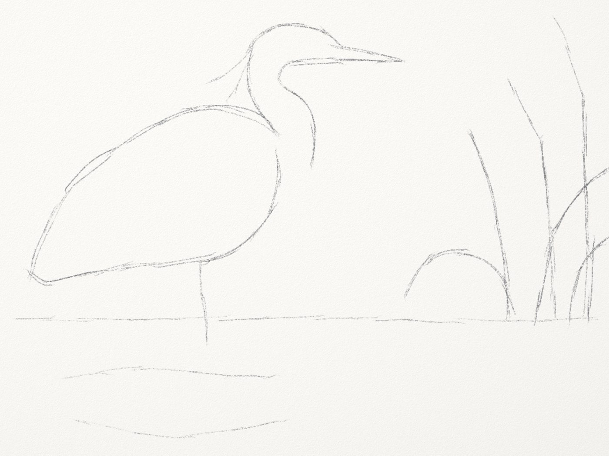
The rough · loose searching strokes first
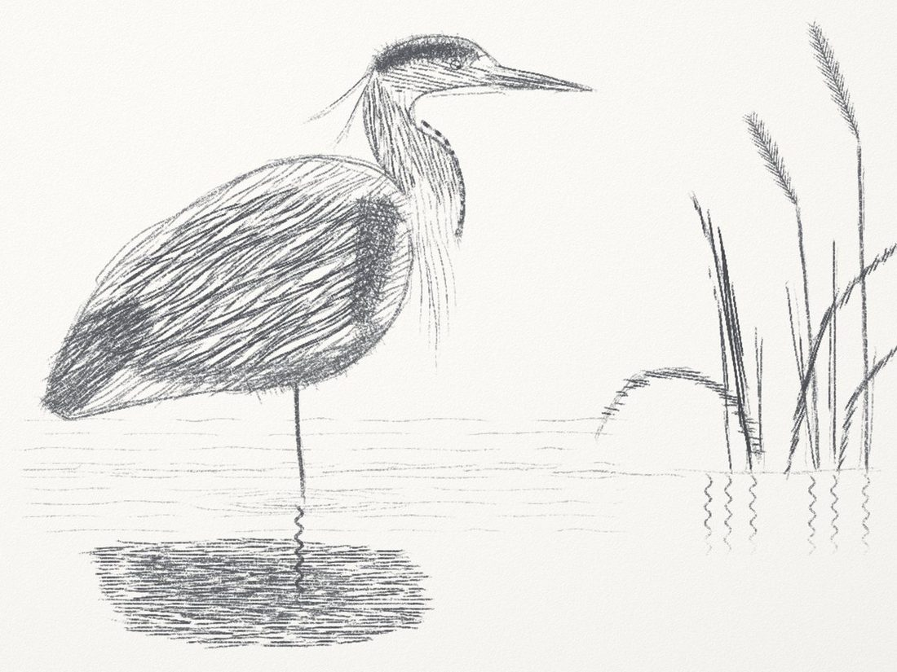
Heron 2 · 6.16 · paths followed by a simulated hand
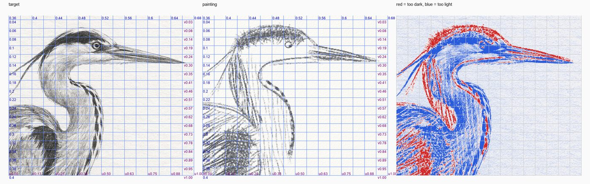
Zoom, before · reference · drawing · too dark (red) / too light (blue)
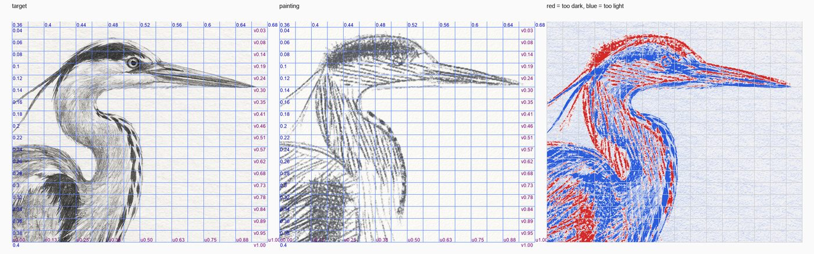
Zoom, after · crest redrawn back from the eye
16Sep 309:39 pm
Claude was still tracing paths, not moving a hand
Why
I asked whether it was still drawing the curves itself rather than setting the acceleration I'd suggested.
Answer
Claude counted: 196 lines, 23 hatches, 21 rough strokes, 1 erase, and zero gestures. "My last summary made it sound otherwise." Aiming by acceleration is hard, since an early push moves everything after it. I told it to disable path drawing entirely, and pencil runs now refuse any mark written as a path.
Path drawing removed
17Sep 309:46 pm
Heron 3: every mark is a gesture (score 5.23)
Tried
A gesture is a start point, an initial velocity, and pushes relative to where the hand is heading: speed up, brake, or turn. Rows of strokes repeat one motion with stagger and fanning. Strokes side by side can share one tremor, so a reed blade reads as one shape. A preview traces gestures without drawing, and an aim point reports the miss. Each gesture's tremor is seeded by its start point.
Result
A 100 mm stroke used to land 10 to 19 mm off. Drift was cut by about 55%. The rough sketch needed 24 gestures, with an average miss near 3 mm after two correction rounds.
Feather flicks in layers, 2B → 4B → 6B to 8B, because one layer of flicks only reaches about L85.
Construction lines were erased by replaying the rough with the eraser: same seed, same tremor, same line.
12 of 37 checkpoints rolled back. Motion-only beat path-drawn: 6.16 → 5.20, settling at 5.23 after a clean-up pass.
Kept
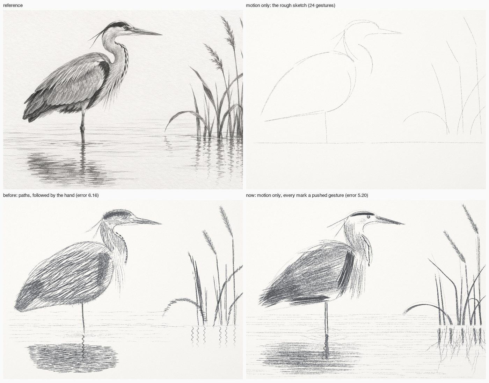
Reference · motion-only rough (24 gestures) · paths followed by a hand (6.16) · motion only (5.20)
18Sep 3011:30 pm
Heron 4: up close, pressing harder where the reference is darker (score 3.37)
Why
I asked it to keep going, use the zoom tool, and get much closer first.
Tried
Tone-following pressure: each gesture presses harder where the reference is darker and eases off where the drawing is already dark enough. Reeds steered one push at a time from the start of the stroke. Correcting every push at once over-corrected.
Result
Head redrawn: head error 6.9 → 4.1. Tail 9.9 → 5.1. Wing 5.4 → 2.8.
All ten reed blades within 0.3 mm, steered only by pushes.
Starting every reflection stroke at the same height left a band of V marks (chevrons). Claude staggered the starts and kept the clean version, though the score slightly preferred the chevrons (3.44 against 3.50).
Biggest drop between any two herons. 97 checkpoints in the run, 38 rolled back.
Kept
Herons 1 to 4 · 6.34 · 6.16 · 5.23 · 3.37
19Oct 11:54 am
The score itself was pulling the drawing toward smudge
Why
I asked for more ideas, then said I meant ideas for the drawing itself.
Answer
The neck was a thick gray column instead of a slim S. The edges were fuzzy, the wing was hatched without regard to feather direction, and the reeds were single lines. The root cause was the score itself: it rewards tone area by area, which pulls a drawing toward smudge. Claude proposed an edge or direction term, outline first, marks along the form, and keeping the whites.
20Oct 11:56 am
Heron 5: strokes along the grain, at twice the resolution (score 2.66)
Why
I asked for an alternate heron 4 that starts from a blank page with every tool, zoom included.
Tried
A tool that measures which way the detail runs everywhere in the reference (feathers, reed blades, ripples), traces evenly spaced lines along it, and turns each line into a gesture. Tone builds up in three light passes. The sim runs at 2048 cells instead of 1024, for a finer point.
Result
Gestures land a median 0.2 mm from their aim. One 806-stroke body pass took error 9.04 → 6.55.
2× resolution cost nothing (21 s for the same pass). On one wing patch, error went 20.2 → 14.9.
The stump blurred feathers and ripples, and was rolled back both times. The eye stayed muddy.
Nothing was ever drawn darker than the target. 11,964 actions, 7 of 30 checkpoints rolled back.
Kept · stump dropped
Heron 5 midway · three flow-following body layers, error 6.23Heron 5 · 2.66
One wing patch · 1024 cells (error 20.2, left) vs 2048 cells with layered strokes (14.9, right)Heron 5 drawing itself · 30 s time-lapse, rough first, then strokes along the grain in light layers
21Oct 19:39 am to 2:41 pm
A character drawing: erasing beat adding detail
Why
Next we did a pencil drawing from an anime character sheet. That one stays off this page, but four lessons from it are worth keeping.
Found
Blank seams. Strokes fade in over 1.2 mm and out over 2.5 mm, and the grain tool ended strokes wherever the detail changed direction, which is exactly at outlines. So every faded end landed on the darkest lines and left them bare. Strokes running along each seam with almost no taper took error 4.47 → 3.64.
I said the grain should be a guide, not a rail. Guided strokes, steered gently with momentum and a turn limit, removed the seams by construction. Patch error 13.49 → 11.58.
Lifting graphite with a kneaded eraser only where the drawing was too dark was the biggest single gain (4.13 → 3.41, too-dark to zero). Close-up "detail" passes were rolled back every time.
When I asked for more human charm, Claude made the drawing less even: bursts of strokes, strokes that change by role, edges that come and go, and a few mistakes left in. Its reasoning was "A person decides what matters and does that part carefully. The rest gets looser or stays unfinished." The result looked more hand-made and a little grayer: 3.41 against 3.37.
Part four · Gouache
One robin, eight times
Oct 2 · 9:03 pm to Oct 3 · 10:29 am
Then opaque paint. Claude built the medium and painted the same robin eight times, each time changing one big thing. Robins 1 to 3 chased accuracy, 4 to 7 chased economy, and 8 combined both with zoom levels.
I asked for a new paint medium and another round of learning to paint. Claude asked which kind, and I said opaque color paint, with a new reference of a different bird, maybe an American robin.
Tried
The sim tracks a film of paint with a thickness, a wetness and the direction of the last brush stroke. A tuft deposits where the film is thinner than what it carries, picks wet paint back up when it's nearly empty, and stirs its color into wet paint. Paint dries from the outside in, thin films first, with 45 s of open time. Dry paint folds into the layer below as a Kubelka–Munk layer, so new paint hides it only as far as its own hiding power allows. Each pigment is defined by its masstone (straight from the tube) and a 1:9 tint with white, and its absorption and scattering are solved from those two. A filbert brush and an illustration board were added.
Result
First test: white covered dark blue, yellow blended into wet red, and dry brush streaked.
Kept
First test sheet · covering, wet blending, dry brush
23Oct 29:37 pm
Mixing to a target color, and a washed-out reference
Tried
A mixer that finds the closest mix of tubes for any color. Early mixes missed by ΔE 13 and 6.4 (a color-difference measure; about 1 is barely visible). A tint can't pin down how strongly an opaque pigment scatters in its own color's channel, so each opaque pigment now gets a minimum amount of scattering. Separately, image prep had white-balanced the robin's pale sky as if it were bare paper, which washed the whole target out. That correction is now off for opaque paint, and a new judge scores color distance without penalizing too-dark, since you can paint over it.
Result
Typical mix error ΔE 0.01 to 0.5.
Swapping black for crimson took mean / worst ΔE over 1,500 target colors from 0.43 / 13.3 to 0.32 / 1.9. Darks now come from crimson with phthalo green, or ultramarine with burnt sienna.
Blank board 49.18 → 57.75 once the target stopped being washed out (the true colors sit further from bare board).
A planner starts a stroke wherever color error is high. It paints the reference color averaged over the brush's footprint and keeps going along the form as long as that color helps. Strokes are pooled into mixes and laid dark to light, big brushes first.
Result
Darks came out too light (head lightness 39 against 24) because pooling averaged them. Now a stroke only joins an existing mix within a tolerance: 174 mixes instead of a few.
4,542 strokes, and no eye.
Kept
Robin 1 · 4.52 · 4,542 strokes · no eye
25Oct 210:01 pm
Robin 2: a finer simulation, still no eye (score 3.13)
Tried
Sim at 2048×1536 (cells of about 0.15 mm), with each brush carrying proportionally more paint at the finer grid. Eight passes from big brush to small.
Result
The score fell from 17.6 after the first pass to 3.13 after the last, most of it in the first three.
13,260 strokes. Still no eye: small strokes smeared into wet paint.
Kept
Robin 2 · 3.13 · 13,260 strokes
26Oct 210:50 pm
Re-rendering finished paintings to look like paint
Why
I asked for a more realistic rendering of the paint itself, without changing anything else.
Tried
Display only, without touching the physics. Claude saves a checkpoint's state and re-renders it with new display code. The new look interpolates the sim grid smoothly and re-sharpens edges along their real contours. It adds bristle furrows along each stroke's recorded direction, raised impasto from paint thickness, and board grain under thin paint.
Result
Every robin on this page is shown in this look, robins 1 and 2 included.
Kept
Robin 1, same strokes · old render vs newClose-up · bristle furrows, impasto and re-sharpened edges
27Oct 211:34 pm
Robin 3: a background that stops at the bird, and an eye by hand (score 3.09)
Tried
The rough outline of the bird was snapped to its real edge, which a hand-drawn outline missed by several millimeters. With regions, a loose 1" flat background stops at the bird, and each region takes its colors only from itself, so orange stopped bleeding into the sky. A tool for automatic accents found 34 dark and 77 light blobs. Then the eye, by hand, using zoom and gesture previews.
Result
Automatic accents were "far too big and smeared past the beak". Rejected.
Eye, four tries. The ring arcs wouldn't land at 7.6 mm across, and skipping the preview once turned it into a 12 mm loop. The kept eye is one small-filbert touch plus a catchlight. The judge called it WORSE; Claude kept it, since "an eye that reads matters more than matching the ring's pixels".
14,541 strokes. Still the lowest score of the eight.
Kept · auto accents dropped
Zoom on the eye · reference · painting · differenceAutomatic dabs (rejected) · hand-aimed eye (kept)
Gesture preview · where the eye-ring arcs would go, before paintingRobin 3 · 3.09 · 14,541 strokes
28Oct 37:13 am
Robin 4: a price per stroke (1,204 strokes, score 5.39)
Why
I asked it to use as few brushstrokes as it could.
Tried
A greedy planner. At each step it picks the single stroke that removes the most remaining error, in the color that fits its whole footprint. Each pass gets a budget and stops when the next stroke isn't worth its price.
Result
Background error fell from 34.9 to 17.1 in the first 25 strokes, and only to 10.3 after 102.
442 strokes reached 8.7, where robin 1 needed about 1,000 for 8.3.
It lost the feather streaks and lichen and kept some bare-board flecks, but to Claude's eye it looks more like a person painted it. In Claude's words, "The score drops because it measures how close the pixels are, not how well the painting reads."
Kept
Robin 3 · 14,541 strokes, chasing accuracyRobin 4 · 1,204 strokes, paying for each one
Robin 4 · 5.39 · 1,204 strokes
29Oct 38:00 am
Robin 5: brushes painted wider than Claude planned (1,157 strokes, score 5.30)
Why
I asked how it could do even better. Claude defined better as more picture per stroke.
Tried
Every plan saves the canvas it predicts, so Claude compared prediction with what actually got painted. Big brushes delivered; small ones fell short. Calibration then showed filberts painting about 40% wider than modeled, with strokes starting about 2 mm late and ending 1 to 4 mm early. Fixes: a real width model, lag compensation that extends each stroke's ends, attention weights (bird ×1.8, face ×3), and re-planning from the actual painting every 50 to 60 strokes.
The smallest round's coverage went from about a third to about two thirds. Filbert spill dropped from 25% to 6 to 10%.
6.97 at ~620 strokes, against robin 4's 7.33 at 642.
Kept
Before · planned widths vs paintedAfter · width model and lag compensation
Robin 5 · 5.30 · 1,157 strokes
30Oct 38:17 am
Robin 6: every brush competes for each stroke (1,022 strokes, score 5.06)
Tried
Fixed budgets per brush were wasting strokes. Now every brush proposes candidates into one pool and the best gain wins. Error is measured the way the score sees it (about 1 mm of blur), and bare board counts double.
Result
6.64 at 540 strokes, better than robin 5's 6.97 at about 620.
Kept
Robins 4 · 5 · 6 · the economy runs, faces up closeRobin 6 · 5.06 · 1,022 strokes
31Oct 38:37 am
Robin 7: effort where people look (1,017 strokes, score 4.87)
Why
I asked it to spend extra strokes wherever they improved the picture enough, checking every so often, to put more effort around the head, and to split the image into parts.
Tried
gpt-image repainted the reference as flat color-coded parts, which lined up almost exactly. Each part got a salience weight, for how much it draws the eye: eye 8; eye ring and beak 6; head and throat 4; legs 3; breast, wing and buds 2.2; tail 2; branch 1.6; background 1. Claude reviewed every few batches and decided where extra strokes were worth it.
Result
Against robin 6 at the same stroke counts: 7.59 vs 7.87 at 360, 6.20 vs 6.64 at 540, 5.32 vs 5.67 at 782.
The head got 12% of the strokes for 2.7% of the area. The background got 46% for 69%.
Later head strokes dulled the eye, so the eye now gets painted last.
Kept
Segmentation · the reference as color-coded partsSalience · eye 8 · beak 6 · head 4 · background 1
Robin 7 · 4.87 · 1,017 strokesRobin 6 vs 7 · same budget, effort moved to the head
32Oct 39:24 am
Robin 8: zoom levels and thin lines (3,450 strokes, score 3.98)
Why
I asked whether zoom had levels (it didn't), then told it to zoom in close wherever it needed to, with a budget of 3,000 to 4,000 strokes.
Tried
A toned board first. Then levels: the whole sheet, then regions, then parts from the segmentation, then features. Each level is finer and charges a lower price per stroke. The planner works on a tile plus a margin, so going close stays affordable, and tiles are ranked by salience-weighted error. A new kind of stroke traces thin dark and light lines straight from the reference. The catchlight goes last.
Result
Level
What
px/mm
Price
Strokes
Score
Board
one toning wash
3
–
12
57.8 → 30.3
L0
whole sheet, big brushes to No. 2
3
300
908
4.96
L1
6 region tiles, lines added
5
150
1,439
4.55
L2
parts: head, wing, legs, buds
8
60
2,399
4.20
L3
beak and eye ring
12
20
2,519
4.18
L2 again
branch, buds, undertail; catchlight
8
60
3,450
3.98
Also
The light-line strokes at L2 finally painted the wing's pale feather edges, plus crescents, throat streaks and claws. None of the earlier candidate types could.
Robin 3 still scores lower (3.09) because its background is tighter. Robin 8 has the best face and wing, and it's the one I picked.
Kept
Robin 8 by level · toned board · L0 · L1 · L2 · finalRobins 3 · 7 · 8 · whole, face and wingRobin 8 · 3.98 · 3,450 strokes, before signingPart five · Signing it
Learning to sign
Oct 3 · 2:57 pm to 5:13 pm
Last, Claude signed the painting. Signing turned out to be a lesson in what makes a movement look human.
33Oct 32:57 pm to 5:13 pm
A signature that looks practiced
Why
I asked Claude to design its own signature and paint it on. Then I asked for something more like an artist's mark, then for something that still read as a signature, and then pointed out that a signature should be prerecorded strokes, since that's how signatures work.
Tried
Three rounds of designs: cursive signatures, then monograms, then brush signatures, where design D (a big C cradling "laude") won. The signature is saved as one motion and replayed onto any painting, moved and scaled to a baseline. The motion comes from tracing D in writing order, with pressure taken from the ink's width. An exact trace made the hand buzz, so the motion is now solved for minimum jerk through the letters' turning points. When I said it was still too slow and jerky and didn't look human, Claude listed what a practiced signature has: speed, almost no pen lifts, entering and leaving in motion, a thick-thin rhythm, one brush.
Result
Exact tracing: the pushes flipped direction 43% of the time. Solving all pushes together with a jerk penalty took the C to zero flips.
Brushes: a No. 2 round ran dry, a rigger smeared through the turns, and a No. 4 round filled the loops. A fude holds enough paint for the whole name on one load.
Final: the C, one short lift, then "laude" and the flourish in one unbroken stroke. About 1 s at ~240 mm/s, tapering into a hairline flick.
Kept
Round 1 · signatures, but plain handwritingRound 2 · marks, but B reads as a cent sign and C as a euro signRound 3 · D became the signature
Smooth, but careful · No. 4 round C, No. 2 round name with three reloads, ~3.9 sPracticed · one fude, one unbroken name, ~1 s
The signature being written · real time, on a test board
The finished piece
Hand-painted title, robin 8 with its close-ups, and the signature, in 45 seconds.
Claude learns to paint · 45 s · music: Lazy Lo-Loops (mine, made with Suno)
What Claude learned
Measure before fixing. The stripes came mostly from Claude's own demo script. The "not amazing" heron came from covering 22% of the ink. Each answer came from a number, not from looking harder.
Claude's model of its own tools was the bottleneck. Half of the first painting was rolled back because Claude didn't know what its brush would do. Calibration fixed it every time: the ink stroke library, pencil hatching tables, and gouache filberts that turned out 40% wider than assumed.
The score decides what gets kept, so its blind spots became Claude's habits. A score that only counted darkness rewarded pale smudges, and one that compared tone patch by patch pulled the pencil heron toward smudge. Each fix (a local judge, an outline constraint, color distance, salience weights, a price per stroke) changed which marks won.
Constraints made it learn. Forbidding drawn paths forced real gestures, which led to previews, aim points and push-by-push steering, and the motion-only heron scored better.
Paint the way the reference asks. Press harder where it's darker. Run strokes along the grain, as a guide rather than a rail. Lift where it's too dark instead of adding detail. Never go darker than the target.
Spend strokes where people look. A price per stroke took the robins from 14,541 strokes to about 1,000. Salience and zoom levels put the effort back into the head, and robin 8 landed in between, at 3,450 strokes with the best face and wing.
The judge isn't the eye. The readable eye, the reflection without chevrons and the reeds were all marked worse and kept anyway, each with a stated reason.
Speed changes the method. A 1 ms restore and 18 to 131 ms per candidate turned "lookahead" from a few hand tries into 7,165 painted candidates for one heron.
Human motion isn't accurate motion. The machine look came from uniformity, and the buzzing signature from fitting the trace too closely. Minimum jerk, variation and speed made both read as a hand.
Dead ends
Tried
Why it failed
Dark tide-line at the ink halo's edge
Edge evaporation made it worse; reverted
Codebook marks that work at any angle
Brush lean carried over between strokes; the fix was reverted, so marks are approximate under rotation
Three crossing hatch layers for a wing
One flat dark mass with no feather structure
Blending stump
Blurred feathers and ripples; rolled back both times
Close-up "detail" passes on faces
Darkened areas already at the right tone; rolled back every time
Strokes welded to the grain field
Faded ends piled up at outlines and left blank seams
Automatic accents on the robin
Far too big, smeared past the beak
Eye ring as brushed arcs
Wouldn't land reliably at 7.6 mm; one unpreviewed try became a 12 mm loop
Skeleton tracing of a dry-brush signature
13 false stroke ends; waypoints in writing order worked instead
Exact signature tracing
Pushes flipped 43% of the time, so the hand buzzed
Rigger and small round for the signature
Smeared in the turns; ran dry after "la"
Everything here runs on one laptop. References come from OpenAI's gpt-image-2.5, and Claude wrote the simulators, the tools it paints with, and its own signature.